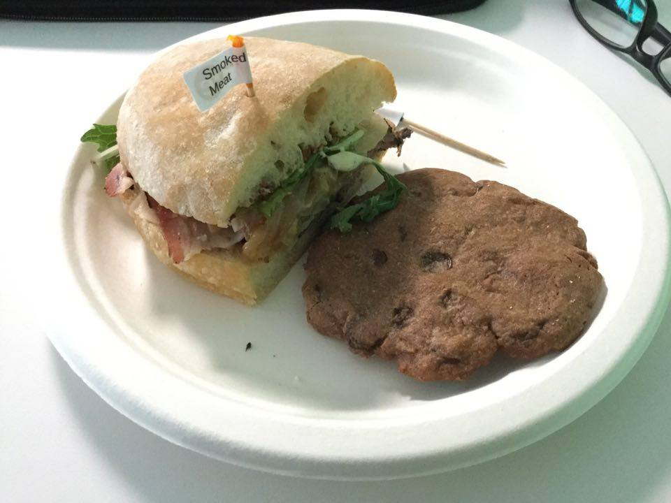

Tech Workshop @ Visier!
So today I managed to get time off from work to attend a full-day tech workshop at Visier HQ.
The workshop started off with an introduction of the company, followed by a series of presentation on Angular2 (main reason for attending b/c Ionic 2 is based off it) & TypeScript by developers who were also UBC alumni.
 The lunch that was provided tasted okay I guess (already ate other half before remembering to take a picture), still looking for a company that provides asian food instead of sandwiches xD
For the next 5+ hours all of us were working on challenges - modify some Angular2 components, templates, add services based on the simple app template that was provided to us. Could have won one of the four prizes (Chromecast 2, Pebble Watch, Ear Phones, another smart watch I think), but I felt that I didn't needed any of them so decided to not present my solutions & let other people have it lol.

Oh & I started using Visual Studio Code today since everything in the app was coded in TypeScript. After using only Sublime Text for the past 1 year+, I've got to admit that an IDE makes life a whole lot easier w/ all their syntax checking & code insight! Gotta start looking for a good IDE for web dev...
At the end of the day, I didn't really learn as much technical stuff as I wanted to but the exposure that I've gained from interacting with the Visier developers still made it worthwhile after all =)